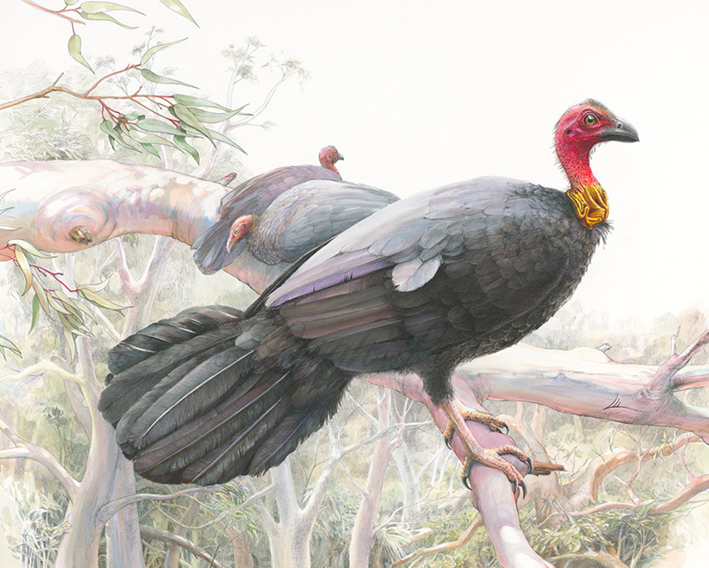

Sir Walter the Brush Turkey
{kind=link}

"Sir Walter the Bush Turkey" won the following at the 2023 Sydney Royal Arts & Crafts Competition:
- RAS of NSW Award of Excellence Medallion for Birds &/or Flowers Painting
- 1st Prize for the Class 6 - Birds &/or Flowers Painting
- The Margaret Fesq Memorial Perpetual Art Prize.
Sir Walter the Brush Turkey
Watercolour 300gsm paper.
Living on the edge of a National Park means that I get many interesting characters visiting on a daily basis.“ Sir Walter the Brush Turkey” is a portrait of one of the turkeys that pass through my backyard every day. I found him fascinating because as a young turkey he was a nightmare, full of bluster and aggression, he’d chase everyone and was just an overall menace. He then had an encounter with humans as he disappeared for several months and then re-appeared. He’d been given a bright yellow tag on his wing with the number 75, a metal ring on his leg and a crusty wound on the top of his head. Still sporting the same expression on his face, he seemed however to have lost all his cocky bluster and the female turkeys chased him mercilessly instead. Sir Walter had slid all the way to the bottom of the pecking order.
I take many photo’s of the turkeys as their antics are a constant source of amusement and it was from these that I worked from. My favourite one of Sir Walter is the main source for the painting and was taken when he’d regained some of his dominance. His brightly coloured wattle and head show how he was in full courtly mode. I have left off the human tags as I feel it distracts from him, and placed him in a tree as opposed to the balcony railing where he sometimes spends a whole day. The foliage background in the painting is inspired by the view of the Lane-Cove National Park from my balcony and there is even a possum hidden in the undergrowth.
The work is done in watercolour and ink pen on 300gsm watercolour paper. The original is presently exhibited at the Sydney Royal Easter Show.
Limited edition prints in archival ink on watercolour paper are available upon request.